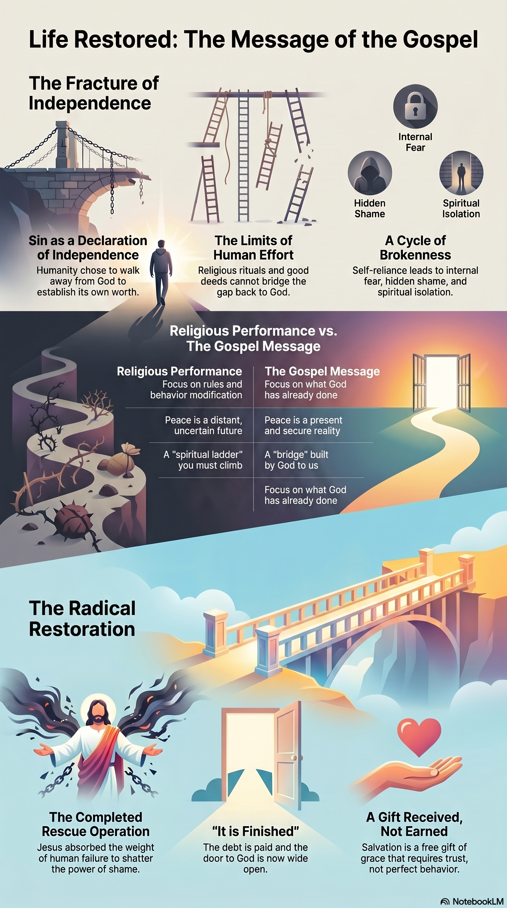

Not a religious system, a threat of judgment, or a reward for your performance. The word "Gospel" simply means Good News—and it is an announcement of life restored.
The word "religion" carries a lot of baggage. For many, it brings up memories of rules, rigid systems, and the underlying pressure to perform. It often sounds like a heavy obligation: if you modify your behavior, believe the right concepts, and attend the right meetings, you might eventually be accepted by God. It turns spiritual life into a stressful transaction where peace is always pushed off into a distant, uncertain future.

But the message of Jesus stands in direct contrast to this performance system. It is called the Gospel, which literally translates to "good news." It isn't a high-pressure sales pitch or a list of demands. It is a historical announcement about what God has already done to rescue humanity from the broken patterns that trap us and to welcome us back into true, vibrant life.
To understand why this message is so life-changing, we have to look at the complete story: where we started, what went wrong, and the radical way God stepped in to restore it.
You were not an accident, and you weren't created to just survive, manage stress, and run on a continuous hamster wheel of performance. The biblical story begins with a profound declaration: you were intentionally designed by a loving Creator for deep connection, genuine peace, and lasting purpose.
Humanity was made to live in perfect harmony with God, in meaningful connection with one another, and in alignment within our own hearts. We were built to experience life from a secure foundation of unconditional belonging.
It doesn't take long to look around our world—or look honestly inside ourselves—to realize that things are not the way they were meant to be. We handle anxiety, carry hidden layers of shame, navigate broken relationships, and fight an underlying sense of emptiness or isolation.
The Bible uses the word sin to describe the root cause of this condition. Strip away the religious misuse of the word, and sin simply means a declaration of independence from God. It is humanity choosing to walk away from the Source of life to try to be our own gods, write our own rules, and establish our own worth. This independence fractured our spiritual connection, bringing a reality of fear, guilt, and spiritual death into human experience. We became trapped in a cycle of brokenness we couldn't fix on our own.
Because we could not build a bridge to God, God built a bridge to us. This is the heart of the Good News. Out of absolute love, God stepped directly into our broken history in the person of Jesus.
Jesus didn't come to look down on us or condemn us. He lived the life of perfect love and connection that we failed to live. Then, He willingly went to the cross. On that cross, Jesus took the entire collective weight of human failure, sin, and isolation upon Himself. He absorbed the judgment and paid the ultimate price for our independence so that we would never have to carry it. When He rose from the dead, He completely shattered the power of death and shame, proving that His rescue operation was a definitive success.
When Jesus was on the cross, His final words were, "It is finished." This means the debt has been paid, the separation has been canceled, and the barrier between humanity and God has been completely leveled. There is no spiritual ladder left to climb. The door to God is wide open.
Because of what Jesus did, salvation—which means rescue, wholeness, and restoration—is given to us as a completely free gift. It cannot be earned, bought, or deserved through moral behavior, family heritage, or religious achievement. It is entirely based on grace.
This alters the entire landscape of how we live:
A gift is only yours if you open your hands to receive it. God never forces Himself into your life; instead, He extends a personal invitation to you. Responding to this Good News is not about joining a religious organization; it involves two simple shifts of the heart:
Trust (Faith): Shifting your confidence away from your own efforts, goodness, or ability to be "good enough," and putting your total trust in what Jesus did for you on the cross.
Surrender: Turning away from living independently from your Creator, and inviting Him into your life to guide you, restore you, and teach you a completely new way to be human.
You don't need a special religious vocabulary, a church background, or a perfect tracking record to talk to God. You can reach out to Him right now, from exactly where you are sitting, using your own words to express your desire to trust Him, receive His free forgiveness, and step into the restored life He has waiting for you.
Is the peace, worth, and acceptance you are looking for something you are constantly exhausting yourself to work toward, or is it something that has already been freely given to you through Jesus? If the door is already open and the work is finished, what would it look like for you to stop striving and simply live as though it were true?